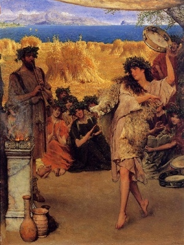

Sacred Texts Classics
|  | The Eleusinian and Bacchic Mysteriesby Thomas Taylor[1891] |
This is Thomas Taylor's essay on the ancient initiation rituals of Eleusis and Bacchus. Taylor (1758-1835) was an English Neoplatonist who was the first to translate Aristotle and Plato into English. His translation of the Orphic Hymns is also available at this site, among other works. The inner teachings of these ancient Mediterranean mystery religions have been lost for two millennia, but Taylor believed that he had found the skeleton key in classical mythology and Plato's philosophy. This influential essay outlines his theory.